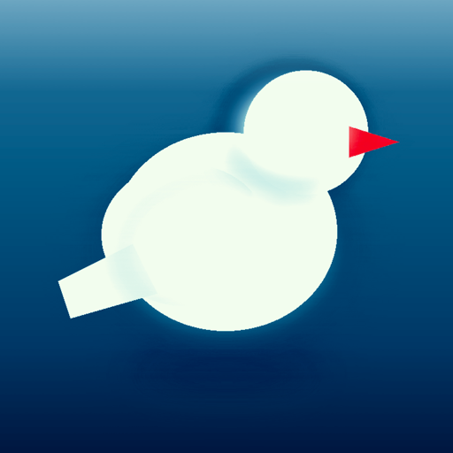
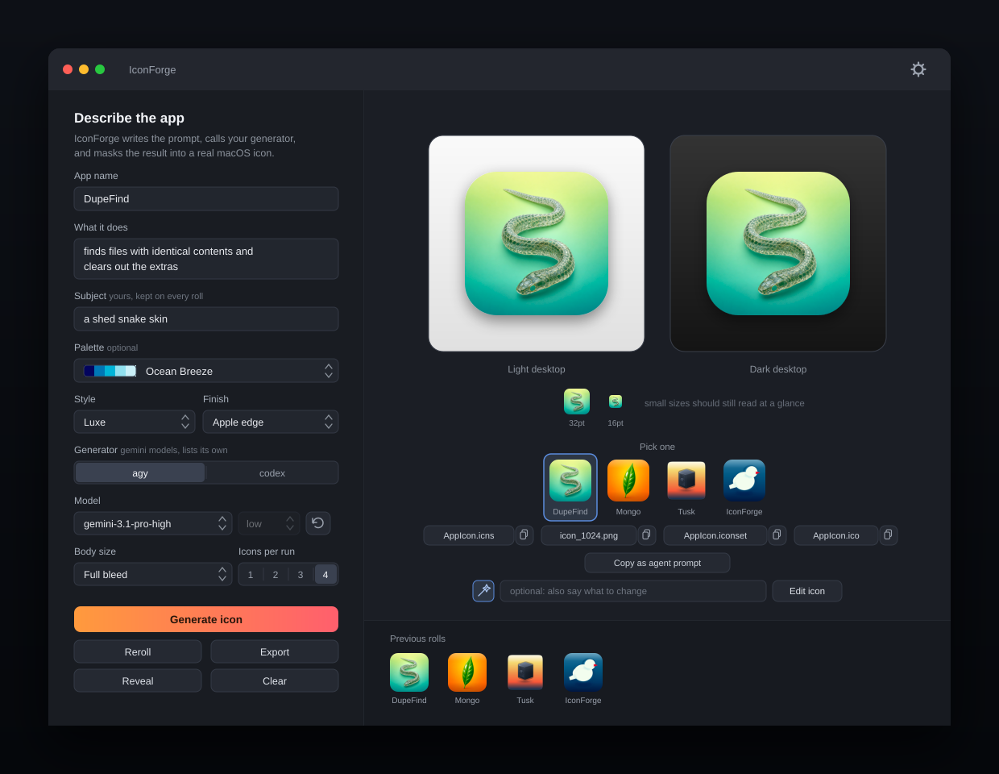
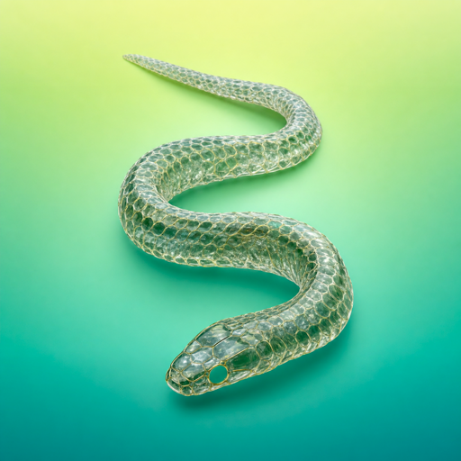
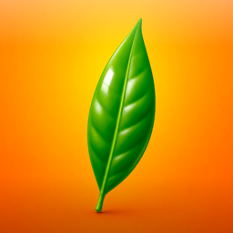
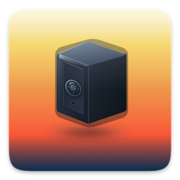

macOS 14+ · agy or codex

icon.
IconForge takes your app's name and what it does, works out what to draw,
renders it through the agentic CLI you already have, then cuts, masks and
lights it into a real .icns — every size Apple asks for.

Output
Each started as one line of text. No hand-fixing after the render.

Duplicate-file finder. It chose the snake.

Database browser. A leaf, on cue.

Encrypted notes. Drew a locked safe.
Its own icon. A white bird, red beak.
Straight out of the app. The mask, edge light and shadow are Core Graphics, not the model.
The mask lab
macOS 26 wraps legacy icons in a system-drawn plate, and two masks stacking reads as a white border. So body size is a real choice, not a preference. Switch and watch the same artwork refit — this is what the app does, live, in milliseconds.
824 of 1024 px · squircle mask · shadow
Full bleed is the default on macOS 26: no mask, no margin, no shadow. The system supplies the only rounding.
The app
Generating a pretty picture is the easy half. IconForge does the finishing work that makes it an icon.
Each icon gets its own subject and art direction, rendered in parallel. Click the one that wins. If one call fails, the other three still land.
"Make the bird bigger." "Warmer background." The artwork goes back with instructions to keep everything else. The edit appears beside the original, not over it.
Reroll steers away from the half-dozen subjects it last tried for your app, so a second press is a different concept. Type your own subject and it sticks.
A grid of Coolors palettes whose hex values go into the prompt verbatim. Or ignore the grid and type a direction: "sea glass to deep teal."
Flat, Apple edge, Glossy dome, Deep shadow, Punchy. Finishes are a local pass over the artwork — switching re-renders in milliseconds and never calls the model.
One click puts an instruction on the clipboard that tells your coding agent where the files are and how to install the icon — Swift, Tauri, Electron, Flutter or web.
Pipeline
The prompt never says "app icon." It asks for a 3D render of one object on a gradient. The rounding happens here.
Centre-crop the raw artwork and redraw it at 1024×1024, whatever size came back.
Lay on the chosen finish: a lit top lip, a shaded base, a hairline inside the silhouette — clipped so nothing spills.
Unless the body is full bleed, clip a superellipse squircle and centre the body on a transparent canvas with a soft shadow beneath.
Render all ten sizes from the 1024 master and let iconutil pack the .iconset into an .icns.
Write a Windows .ico alongside, with PNG entries from 16 to 256 pixels.
Ship it
A disk image with IconForge.app inside. Drag it to Applications and you are done.
Or build it yourself. One script builds a release binary, wraps it in IconForge.app, ad-hoc signs it, and copies it to /Applications.
./install.sh
No install? ./build_app.sh && open build/IconForge.app
runs the same bundle out of build/.
agy or codex in your shell — one is enough, you pick in the appswift and iconutilsips and iconutil ship with macOS